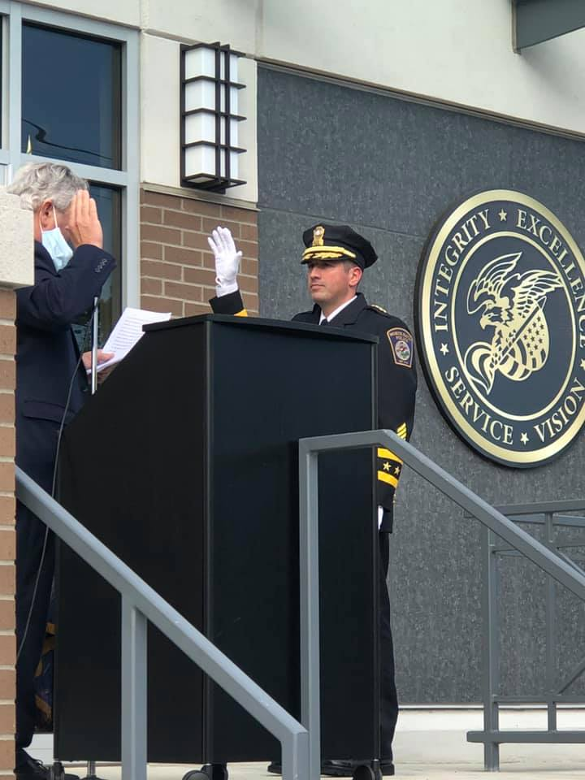

About
Chief Glenn is a 20-year veteran of the department, having held every rank along his career. He has commanded the Uniformed Services Division, Investigative Services Division, and South-Central Regional Swat team. He also acted as Public Information Officer (PIO) and assists in the budgeting and strategic planning of the Department. Chief Glenn was a key player in the creation of the Department K-9 program, formulation of the South-Central Regional Swat team, and Headquarters building project. He has served as Deputy Chief of Police, and has attended numerous educational and leadership courses, which include having a Master’s Degree in Leadership, attending the Harvard Kennedy School of Government Leadership and Decision-Making program, and the FBI National Academy, Session # 268.
In addition to his achievements and education, Chief Glenn has earned the trust and respect of the men and women of the North Haven Police Department. When it was learned the position of Chief would be open, there was no question Chief Glenn was the person to fill it. He is a mentor, leader, and true professional. He has the full support of the men and women of the North Haven Police Department, who are excited for what is to come under his command. The residents of North Haven can have confidence in the next chapter of leadership for the North Haven Police Department and the community as a whole.
